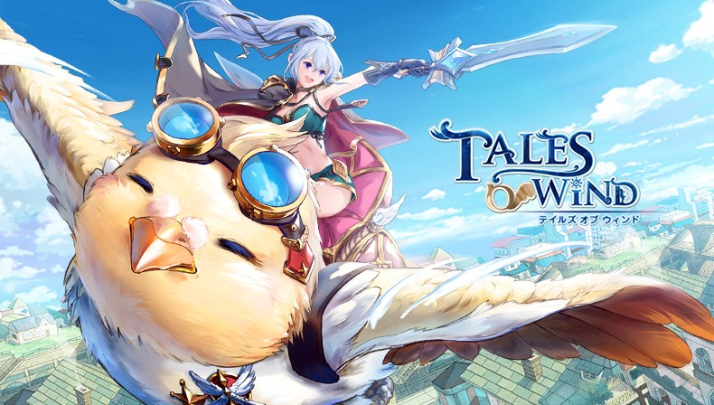

<ion-header>
  <ion-toolbar color="light">
    <ion-buttons slot="start">
      <ion-menu-button></ion-menu-button>
      </ion-buttons>
    <ion-title>
      {{ 'HOME.title' | translate }}
    </ion-title>
    <ion-buttons slot="end">
      <ion-button (click)="openLanguagePopover($event)">
        <ion-icon name="ellipsis-horizontal-circle-outline" slot="icon-only">
        </ion-icon>
      </ion-button>
    </ion-buttons>
  </ion-toolbar>
</ion-header>
 
<ion-content padding>

  <ion-card>
    
    <ion-card-content>
      {{ 'HOME.descrip' | translate }}
    </ion-card-content>
  </ion-card>
 
</ion-content>